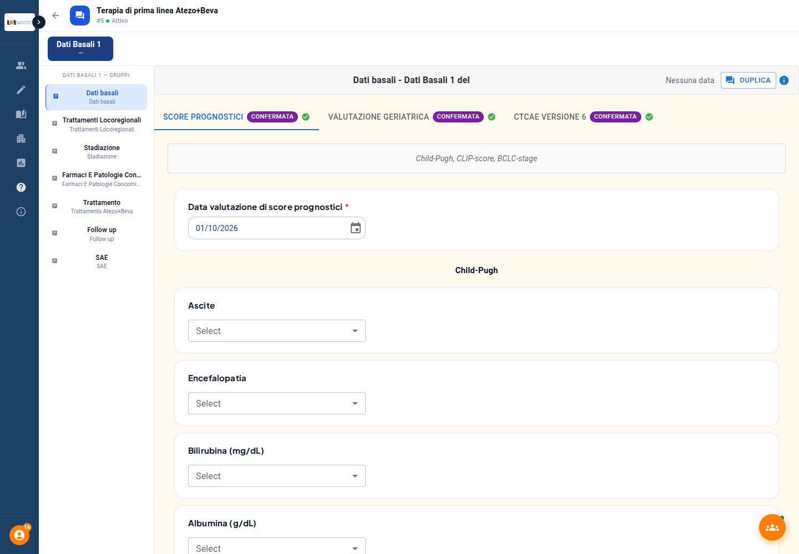
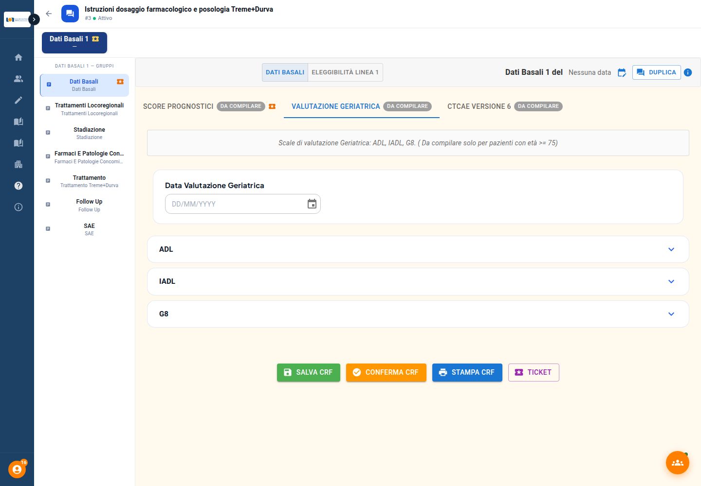
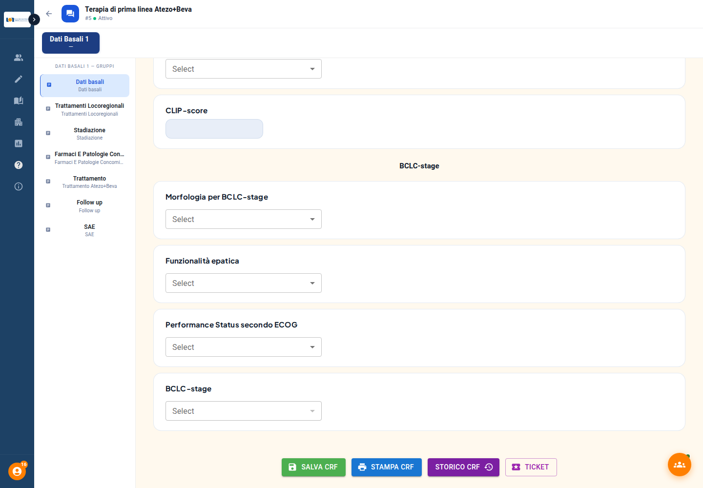
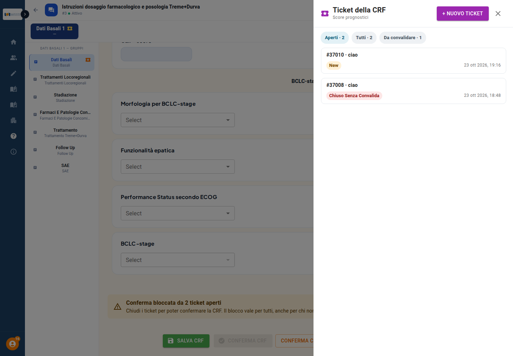
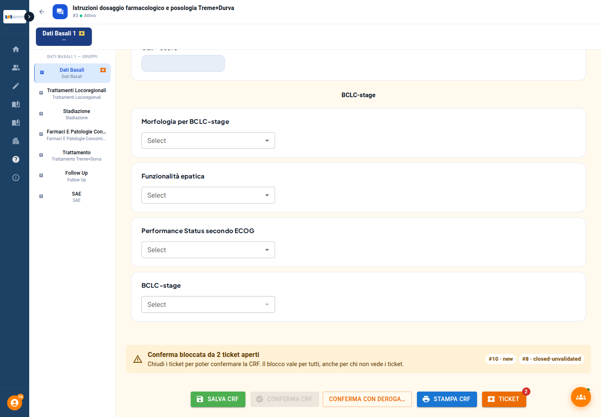
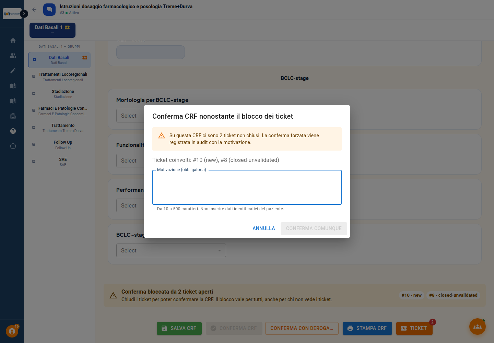

Piattaforma Pascale · Versione del documento: bozza 1 (26 ottobre 2026)
Questa guida descrive la conferma delle CRF (tutte le CRF tranne le SAE) e come si intreccia con i ticket (per esempio le query della farmacovigilanza) e con la certificazione. La conferma delle SAE è un flusso a parte (firma con OTP): è nella guida «Conferma e certificazione delle CRF», § 9.
| Passo | Chi lo fa | Cosa succede |
|---|---|---|
| 1 | Chi compila la CRF | Salva la CRF: la scheda passa a In compilazione. |
| 2 | Chi ha la capacità «Può confermare le CRF» | Preme Conferma CRF in fondo alla scheda e conferma la domanda di sicurezza. |
| 3 | Il sistema | Controlla il permesso e che non ci siano ticket aperti sulla CRF. Se tutto è in regola registra chi ha confermato, quando, e la scheda diventa Confermata. |
| 4 | Se ci sono ticket aperti | La conferma è bloccata finché i ticket non sono chiusi. Chi ha il diritto di deroga può confermare comunque, con una motivazione registrata in audit (§ 4.4). |
| 5 | Chiunque modifichi la CRF dopo la conferma | La scheda risulta Modificata – Da confermare e va riconfermata. |
| 6 | Dopo la conferma di tutte le CRF | Si può passare alla delega e alla certificazione con OTP (§ 5). |
Principio di fondo: i permessi dipendono dalle capacità impostate sul gruppo, mai dal suo nome. Il controllo è fatto sempre dal server: nascondere o disattivare un pulsante nell'interfaccia non basta e non è un controllo.
Nella gestione dei gruppi (Gruppi) le capacità che riguardano la conferma sono indipendenti: nessuna ne implica un'altra.
| Capacità (come si legge nel gruppo) | Cosa consente |
|---|---|
| Può confermare le CRF | Usare il pulsante Conferma CRF. |
| Può chiudere e riaprire i ticket | Chiudere (con motivazione) e riaprire i ticket di una CRF, per sbloccare la conferma. Di norma è assegnata alla Farmacovigilanza. |
| Può confermare una CRF anche con ticket aperti (con motivazione) | Usare Conferma con deroga… quando ci sono ticket aperti (§ 4.4). |
CRF_CONFIRM_REQUIRE_CLOSED_TICKETS). Acceso, i ticket aperti bloccano la conferma; spento, non c'è nessun blocco. È lo stesso interruttore per le CRF e per le SAE.| Stato | Significato |
|---|---|
| Da compilare | Nessuna risposta ancora salvata. Una CRF mai aperta conta come «non confermata». |
| In compilazione | Risposte salvate, la CRF non è ancora confermata. |
| Confermata | Accanto al nome della scheda compare la spunta verde; passandoci il mouse si legge «Confermata da nome il data». |
| Modificata – Da confermare | Era confermata ed è stata modificata dopo la conferma: va riconfermata. |

Ogni scheda mostra il proprio stato accanto al nome: qui le tre schede dei Dati Basali sono Confermate, con la spunta verde.
In fondo alla scheda, accanto a Salva CRF e Stampa CRF, compare il pulsante arancione Conferma CRF.

Per chi ha la capacità e non ci sono ticket aperti il pulsante è attivo. Gli altri casi sono nella tabella qui sotto.
| Situazione | Cosa vede l'utente |
|---|---|
| Gruppo con la capacità «Può confermare le CRF» (o superadmin), nessun ticket aperto | Pulsante attivo. |
| Gruppo senza la capacità | Pulsante visibile ma disabilitato; passando il mouse: «Il tuo gruppo non può confermare le CRF.» |
| Ticket aperti sulla CRF, o sistema dei ticket non raggiungibile | Pulsante disabilitato con il motivo (§ 4). |
| Salvataggio o importazione in corso | Pulsante disabilitato fino alla fine. |
| CRF già confermata, CRF compilata dal paziente, scheda per il radiologo, SAE | Il pulsante non compare. Le SAE si firmano con OTP. |

Su una CRF già confermata il pulsante non compare più: restano Salva CRF, Stampa CRF, Storico CRF e Ticket.
Se manca il permesso, il server rifiuta la conferma anche se il pulsante fosse stato attivato in qualche modo (§ 6).
La CRF resta modificabile. Dopo la modifica la scheda risulta Modificata – Da confermare e va riconfermata. Se esisteva una richiesta di certificazione, o una certificazione già firmata, la richiesta decade e la firma non è più corrente (resta nello storico); vedi § 5.
Dal pulsante Ticket della scheda si apre un ticket legato a paziente, ciclo e CRF: si sceglie il gruppo destinatario, la priorità e si scrive il messaggio. Il pulsante mostra quanti ticket aperti ci sono. I testi dei ticket restano nel sistema di ticketing (Zammad).

Il pannello Ticket della CRF elenca i ticket con i filtri Aperti, Tutti e Da convalidare; da qui si apre anche un Nuovo ticket.

Sopra i pulsanti compare l'avviso giallo, e Conferma CRF è disabilitato. Accanto c'è Conferma con deroga… per chi ne ha il diritto.
Chi ha la capacità «Può confermare una CRF anche con ticket aperti (con motivazione)» (o è superadmin) vede, accanto al pulsante, «Conferma con deroga…». Si apre la finestra «Conferma CRF nonostante il blocco dei ticket»:

Se il sistema dei ticket non risponde, lo stato dei ticket non è verificabile: compare «Ticket in manutenzione» e il pulsante resta disabilitato con «Sistema di ticket in manutenzione. Riprovare o contattare l'assistenza.» Per prudenza la conferma non passa, e la deroga non vale in questo caso (salvo una regola dell'ambiente attivabile).
Aprire, o riaprire, un ticket di una CRF già confermata la riporta a Da confermare (le informazioni di conferma si tolgono e l'evento è registrato in audit). Una richiesta di certificazione in corso decade. Chiuso il ticket, la CRF si riconferma come al solito. Questo non vale per le SAE.
Quando tutte le CRF richieste del paziente sono confermate, chi ha la capacità «Può scegliere il gruppo che certifica le CRF» assegna il gruppo certificatore e un membro di quel gruppo firma con OTP. Se in seguito una CRF cambia (modifica, o ticket aperto su una CRF confermata), la certificazione risulta non più corrente e va rifatta. I dettagli sono nella guida «Conferma e certificazione delle CRF», §§ 2–3. Le CRF SAE, i questionari compilati dal paziente, le schede di eleggibilità e le schede del Diario non contano come CRF da confermare.
| Messaggio (sintesi) | Quando |
|---|---|
| «Il tuo gruppo non può confermare le CRF.» (tooltip del pulsante) | Il gruppo attivo non ha la capacità di conferma. |
| «You are not authorized to confirm CRFs.» (403) | La conferma è arrivata al server senza la capacità (per esempio da un'altra applicazione). Il messaggio del server è in inglese. |
| «Non puoi confermare la CRF: ci sono ticket non chiusi. Chiudili e riprova.» (409) | Conferma con ticket aperti, senza deroga. |
| «Sistema di ticket in manutenzione. Riprovare o contattare l'assistenza.» (503) | Il sistema dei ticket non risponde: conferma sospesa. |
| «Non autorizzato a scavalcare il blocco dei ticket.» (403) | Deroga richiesta da chi non ha il diritto. |
| «La motivazione dell'override non è valida.» (422) | Motivazione troppo breve o troppo lunga (10–500 caratteri). |
Sulla piattaforma di prova (staging), il 23–25 ottobre 2026:
Da collaudare in questa bozza: il pulsante «Conferma CRF» visibile ma disabilitato, con il motivo nel tooltip, per i gruppi senza la capacità (comportamento ripristinato il 26 ottobre). Le schermate sono state prese dalla piattaforma di prova con dati fittizi (paziente 3 e 5 dello studio «JLI Final») con un utente superadmin: manca quella del pulsante disabilitato con il tooltip.